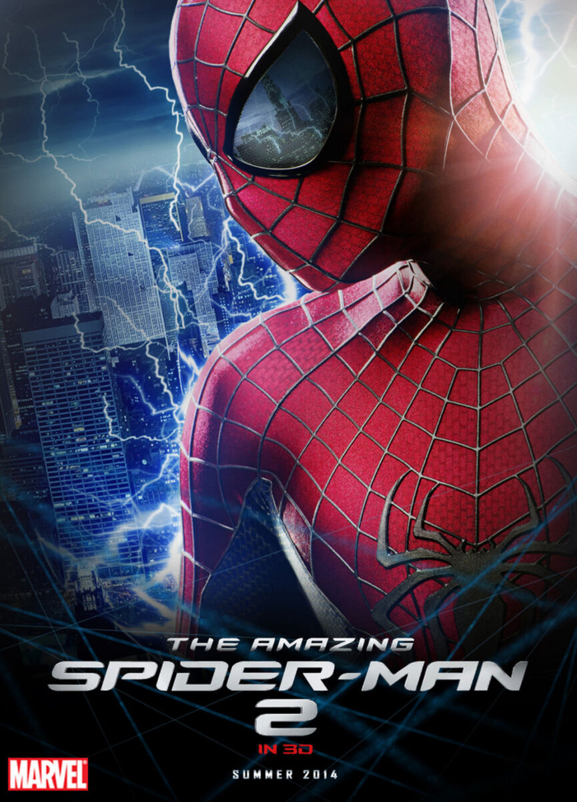

'Spider-Man:No Way home':la idea de recrear el icónico meme del hombre araña surgió de Andrew Garfield'
Marvel ha compartido compartió una fotografía donde podemos ver a los tres actores de 'Spider-Man:No Way Home'Tom Holland, Tobey Maguire, y Andrew Garfield recreando el famoso meme del hombre araña que lleva siendo viral muchos meses,donde ahora son tres los superhérores los que están señalando, como si no se conocieran, un momento que se pudo ver, de forma más sutil en la propia película

El meme, que viene,cuya imagen proviene del episodio de los dibujos animados de Spiderman de 1967,'doble identidad,'en el que un villano intenta hacerse pasar por el héroe, se ha compartido de nuevo para anunciar la venta de compartido de nuevo para anunciar la venta de formatos domésticos y aparación en digital de la película el 22 de marzo con una imagen especial de los actores durante el rodaje, entre otros momentos detrás de las cámaras como Tobey Maguire imitando algunos pasos prohibidos de su infame baile en 'Spider-Man3'.